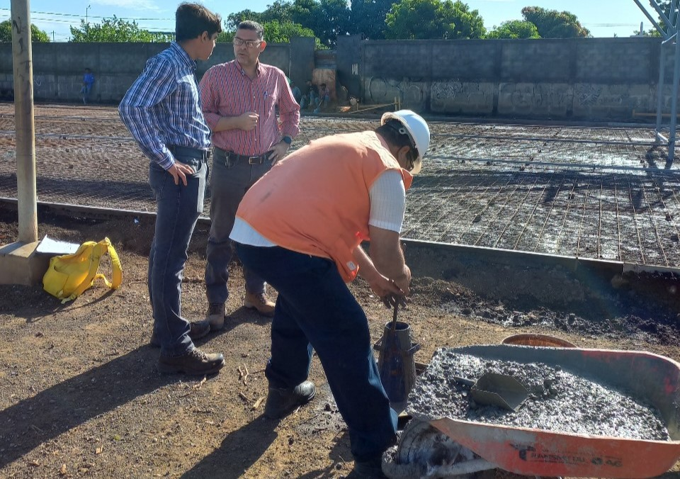

El control de calidad del concreto lo realizamos mediante las siguientes pruebas específicas:
Los
cilindros de concreto nos permiten realizar pruebas de resistencia a la compresión.
Procedimiento:
Se moldean cilindros de concreto en el sitio o en el
laboratorio y luego se someten a pruebas de resistencia a la compresión para evaluar la
capacidad del concreto para soportar cargas de compresión.
Las viguetas se utilizan para evaluar la resistencia a flexión y otras propiedades del
concreto.
Procedimiento:
Las viguetas se moldean y se someten a pruebas
para medir su capacidad para resistir cargas flexionales y evaluar la calidad y
durabilidad del concreto.
Los cubos los usamos para realizar pruebas de resistencia a la compresión, similares a
los cilindros.
Procedimiento:
Se moldean cubos de concreto y se someten a pruebas de
resistencia a la compresión para evaluar la calidad del concreto.
El martillo suizo, o esclerómetro, se utiliza para medir la dureza superficial del
concreto.
Procedimiento:
El martillo suizo se golpea contra la
superficie del concreto, y la energía del rebote se mide para estimar la dureza
superficial. Se utiliza para evaluar la calidad del concreto y detectar posibles
problemas como la carbonatación.
La extracción de núcleos la utilizamos para obtener muestras del concreto en estructuras
existentes y evaluar su resistencia y condiciones internas.
Procedimiento:
Se perfora un núcleo del concreto utilizando una herramienta
especial, y la muestra
resultante se utiliza para realizar pruebas de resistencia a la compresión y analizar la
calidad y condiciones internas del concreto.
Estas técnicas son parte integral del control de calidad del concreto y se seleccionan según los aspectos específicos que se desean evaluar en un proyecto. Las pruebas proporcionan información valiosa para garantizar que el concreto cumpla con los estándares requeridos y para prevenir posibles problemas a lo largo del tiempo.
